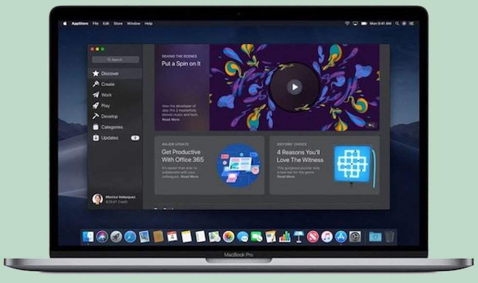
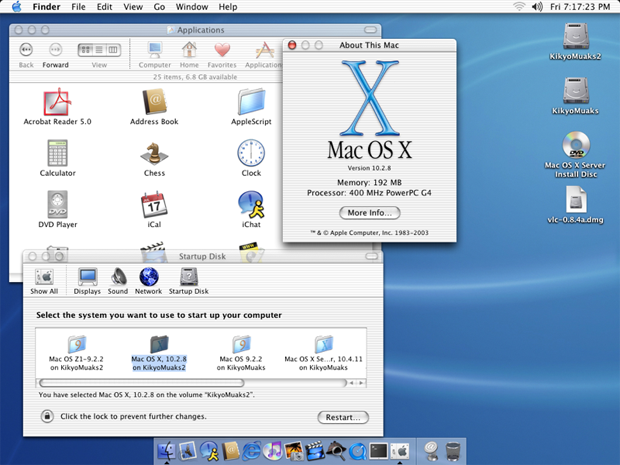

O MacOS é um sistema operativo desenvolvido pela Apple, e desde 2001 vem sendo destinado unicamente ao uso em computadores Mac. É o segundo sistema mais usado do mundo, estando apenas atrás do sistema Windows da Microsoft. A última versão do OS X possui certificação UNIX. Até a versão 10.8 (Mountain Lion) chamava-se de Mac OS X, e entre esta versão e a versão 10.11 (El Capitan) chamava-se OS X.
O sistema é a segunda série dos sistemas Macintosh, esse primeiro é atualemnte chamado de Mac OS classic, introduzido em 1984, o último lançamento desse sistema foi o Mac OS 9 em 1999. A primeira versão para desktop, o Mac OS X 10.0, foi lançada em março de 2001, com sua primeira atualização, a 10.1, chegando ainda naquele ano. Depois disso, a Apple começou a nomear seus lançamentos com nome de felinos, que duraram até OS X 10.8 Mountain Lion. A partir do OS X 10.9 Mavericks, os lançamentos foram nomeados em homenagem a locais na Califórnia. A Apple encurtou o nome de "Mac OS X" para "OS X" em 2012 e depois alterou para "macOS" em 2016, adotando a nomenclatura que eles estavam usando para seus outros sistemas operacionais como, iOS, watchOS e tvOS. A versão mais recente é do macOS Big Sur, que foi lançado publicamente para todos os usuários em 2020.
Notebook Mac
O núcleo do macOS é um sistema operacional certificado Unix, construído em torno de um núcleo XNU com recursos básicos Unix acessíveis por meio de uma interface de linha de comando. Pouco antes do lançamento do Mac OS X a Apple lançou esse núcleo como Darwin. Baseando-se nesse núcleo, a Apple projetou e desenvolveu um número de componentes de código fechado (closed source) de licença proprietária, incluindo a interface Aqua e o Finder (o sistema de gerenciamento de arquivos). A combinação da interface amigável e o poder do núcleo open source Darwin/BSD tornaram o Mac OS X o ambiente Unix mais bem vendido até hoje em número de computadores vendidos.
A herança do que viria a ser macOS teve origem na NeXT, uma empresa fundada por Steve Jobs após a sua saída da Apple em 1985. Lá, o sistema operacional Unix-like NeXTSTEP foi desenvolvido e lançado em 1989. No início dos anos 90, a Apple tentou criar um OS de "próxima geração" para suceder seu Mac OS clássico através dos projetos Taligent, Copland e Gershwin, mas todos eles foram abandonados. Isso levou a Apple a comprar o NeXTEP em 1996, permitindo que o NeXTSTEP, então chamado OpenStep, servisse como base para o sistema operacional de próxima geração da Apple. Essa compra também levou Steve Jobs a retornar à Apple como um interino, na época, o então CEO permanente da empresa, pastoreou a transformação do OpenStep pelos programadores em um sistema que seria adotado, pelo mercado primário da Apple, para usuários domésticos e profissionais criativos. O projeto foi inicialmente chamado de "Rhapsody" e depois oficialmente chamado de Mac OS X.
O Mac OS X foi originalmente apresentado como a décima versão principal do sistema operacional da Apple para computadores Macintosh; as versões atuais do macOS mantêm o número de versão principal "10". A primeira versão do Mac OS X, Mac OS X Server 1.0, foi um produto de transição, apresentando uma interface semelhante ao clássico Mac OS, embora não fosse compatível com software projetado para o sistema mais antigo. As versões para consumidores do Mac OS X incluíam mais compatibilidade com versões anteriores. A versão para consumidores do Mac OS X foi lançada em 2001 com o Mac OS X 10.0 codinome Cheetah. As revisões foram variáveis, com elogios extensivos à sua sofisticada e brilhante interface Aqua, mas com críticas ao seu desempenho lento. Com a popularidade da Apple em baixa, os fabricantes de vários aplicativos Mac clássicos recusaram-se a desenvolver novas versões de seus softwares para Mac OS X.
Mac OS X
A Apple rapidamente desenvolveu novas versões do Mac OS X. A versão 10.4, codinome Tiger, alegadamente chocou os executivos da Microsoft ao oferecer vários recursos, como busca rápida de arquivos e processamento gráfico melhorado, que a Microsoft passou vários anos lutando para adicionar, com desempenho aceitável, ao sistema operacional Windows. As novas versões do Mac OS X também incluíram modificações na interface geral, afastando-se do brilho listrado e da transparência das versões iniciais. Alguns aplicativos começaram a usar uma aparência metalizada, ou aparência na barra de título não listrada na versão 10.4. No Leopard, a Apple anunciou uma unificação da interface, com um estilo de janela cinza-gradiente padronizado.
Em 2006, os primeiros Intel Mac lançados utilizaram uma versão especializada do Mac OS X 10.4 Tiger. Um desenvolvimento chave para o sistema foi o anúncio e lançamento do iPhone a partir de 2007. Enquanto os reprodutores de mídia iPod anteriores da Apple usavam um sistema operacional mínimo, o iPhone usou um sistema operacional baseado no Mac OS X, que mais tarde seria chamado de "iPhone OS" e depois "iOS". O Mac OS X 10.6 Snow Leopard foi a primeira versão do OS X a ser construída exclusivamente para o Intel Mac, e o lançamento final com suportes à Intel Mac de 32 bits. O nome foi criado para sinalizar seu status como uma iteração do Leopard, focando em melhorias técnicas e de desempenho ao invés de recursos voltados ao usuário; de fato, esse foi explicitamente marcado para os desenvolvedores como sendo um lançamento "sem novos recursos". Desde o seu lançamento, vários lançamentos OS X ou macOS seguem este padrão, com um nome derivado do seu antecessor.

Mac OS X v10.6 "Snow Leopard"
Em duas versões posteriores, Lion e Mountain Lion, a Apple mudou algumas aplicações para um estilo de design altamente esqueumórfico inspirado nas versões contemporâneas do iOS, ao mesmo tempo em que simplificou alguns elementos, fazendo com que controles como barras de rolagem desaparecessem quando não estavam em uso. Essa direção era, assim como as interfaces metalizadas, impopular para alguns usuários, embora continuasse uma tendência de maior animação e variedade na interface anteriormente vista em aspectos de design. Em 2012, com o lançamento do OS X 10.8 Mountain Lion, o nome do sistema operativo foi reduzido de Mac OS X para OS X.
Com os engenheiros do OS X trabalhando alargadamente no iOS7, com a versão lançada em 2013, o OS X 10.9 Mavericks, foi algo como uma versão de transição, com alguns design esqueumórficos removidos, enquanto a maioria da interface geral do Mavericks permaneceu inalterada. Na versão seguinte, OS X 10.10 Yosemite, adotou um design semelhante ao do iOS 7, mas com maior complexidade, adequado para uma interface controlada com um mouse. A atualização de 2015 da Apple, o OS X 10.11 El Capitan, foi anunciada com objetivo de focar especificamente em melhorias de estabilidade e desempenho.
A partir de 2016, com o lançamento do macOS 10.12 Sierra, o nome foi alterado de OS X para macOS para simplificar com a marca de outros sistemas operacionais primários da Apple: iOS, watchOS, tvOS e o macOS 10.12. As principais características do Sierra foram a introdução do Siri no macOS, o Optimized Storage, melhorias nas aplicações incluídas e a maior integração com o iPhone e o Apple Watch. O Apple File System (APFS) foi anunciado na Apple Worldwide Developers Conference em 2016 como um substituto do HFS+, um sistema de arquivos altamente criticado.
A Apple apresentou o macOS 10.13 High Sierra na 2017 Worldwide Developers Conference, antes de lançá-lo mais tarde naquele ano. Ao rodar em unidades de estado sólido, ela usou o APFS, ao invés do HFS+. Seu sucessor, macOS 10.14 Mojave, foi lançado em 2018, adicionando uma opção de interface de usuário escura e uma configuração dinâmica no papel de parede. Ele foi substituído pelo macOS 10.15 Catalina em 2019, que substituiu o iTunes por aplicativos separados para diferentes tipos de mídia, e introduziu o sistema Catalyst para portar aplicativos iOS. Em 22 de Junho de 2020, a Apple confirmou publicamente por meio de uma apresentação online, a primeira da história da empresa, que iria trocar a plataforma de processadores da Intel no novo macOS 11.0 Big Sur, pela plataforma ARM.